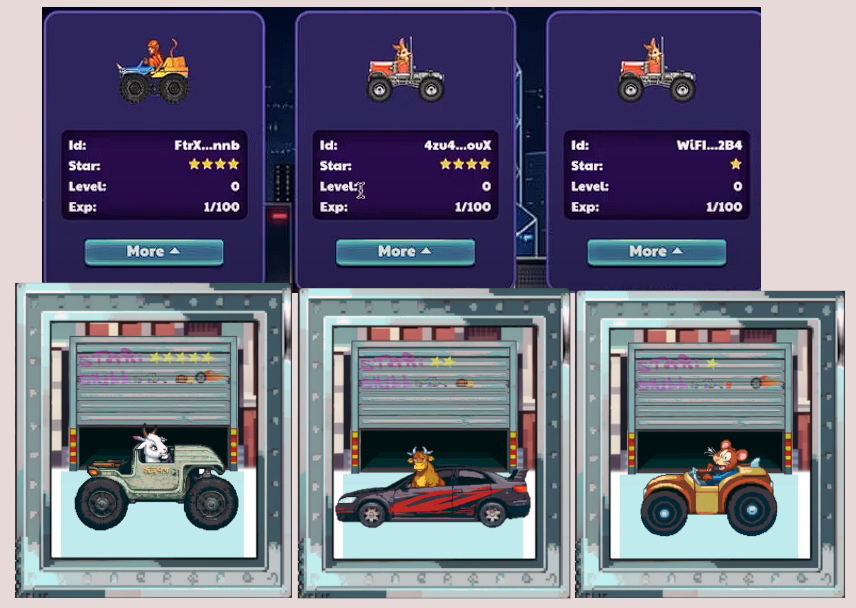
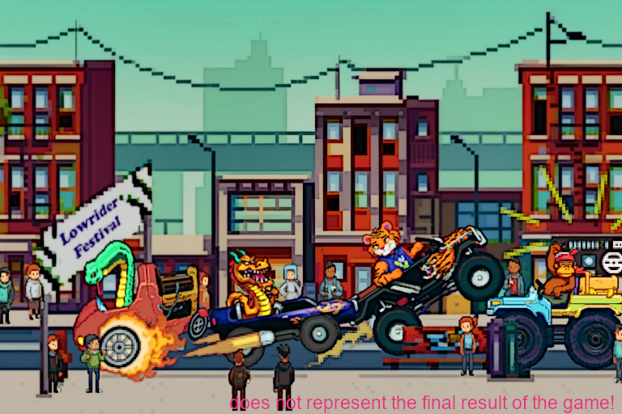
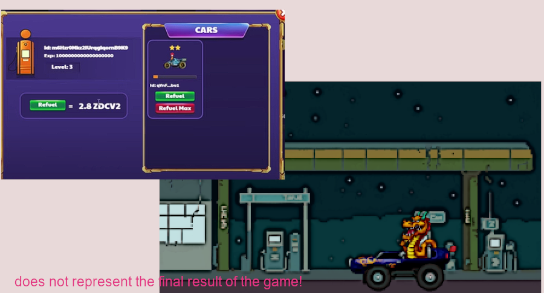
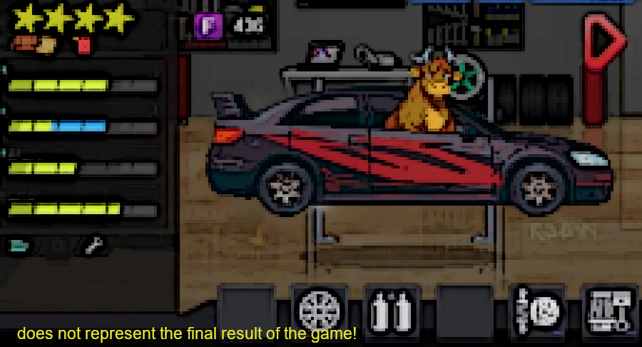
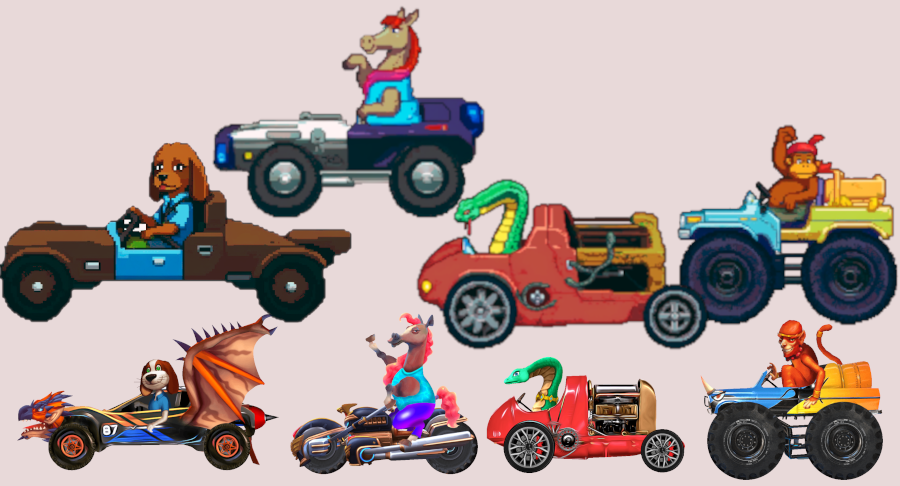

Vai Ruga a gente?
R.Adianta dizer que não? Não,Não vou! o motivo é que preciso de algo que dure o máximo possivel pois tenho uma questão familiar que vai durar muito tempo que passam de 5k de gastos mensais, ruga 5 ,10 ou 20 mil não resolveria minha vida e sim manter algo à longo prazo,mesmo que o jogo não dure meu nome como Dev para outros projetos é mais importante.Outro detalhe que o site está no github onde vc pode entrar e ver todos codigos de cada parte do site, e as box iniciais estão sendo mintadas usado API do LauchNFT que também é seguro,ter algun hack no site ou no botão de mint é quase impossivel.
Entao porque clonou o Zodiacs em fez de fazer seu próprio projeto?
R.Simples e óbivio, marketing, começar do zero gastaria muito com publicidade e nem é garantdo de atingir pessoas, acompanho os Devs BR e vejo vários projetos ótimos que ficam no limbo pq as pessoas só querem jogo gringo Scam,então vi uma aportuidade nessa onda de Reborns pelo marketing.
Apesar disso você não vai receber um clone do Zodiacs, será um projeto novo meu INSPIRADO no Zodiacs, estou copiando várias coisas para meu próprio projeto que já planejo há muito tempo, e como podem ver no Road Map tenho já planejado coisas totalmente novas (Posto Mecânico,Festival Lowrider,NFTs cosméticos para os carros,Passe de temporada e mais....) que penso que podem fazer o jogo ser sustentável por um periodo mais longo que o velho Zodiacs que até durou bastante.
Aqui algumas concept arts de como vai será o Zodacs Reborn Pixel.


Então o jogo não será aquele Click To Ern Scam gostoso pra mim clica e sacar a casa?
R. Sim e não, no inicio vai acontecer, mas já na proxima atualização terá quandes motivos para você holdar o tokes e investir em NFTs e mecânicas novas, a idéia é que apresados ganhem com neogicações de NFTs e quem tem paciencia ganhe com token a longo prazo.,mas tudo isso é um desejo o que vai definir o jogo são vocês e suas decisões.
Então pretende se revelar?
R.Pretendo Sim!mas sabendo como são as pessoas na internet vou observar primeiro a reação da comunidade,se for muito tóxica continuarei até o fim do projeto claro, mas de forma anonima.Também só me revelarei se as vendas forem o suficientes pra seguir com o projeto,se não acontecer você comprou um NFT por apenas 10 matics e ajudou um Dev BR num momento difícil.
Se isso contecer prometo que esse NFT terá vantagem para holders no meu proximo projeto pois eu cheguei na web3 pra ficar e vou fazer meu nome aqui.
Se tudo que disse der certo assim que vender pelo menos 50% das primeiras Box eu vou escolher alguns streamers para dar entrevista e aparecer.
E o contrato do token ZDCR como vai ser ?
R. Pretendo fazer todas medidas óbvias para deixar o contrato confiável para os gringos, meus ganhos serão nas taxas de NFTs (que acredito que serão bastante negociados) e pouco no token.
Os NFTs serão no mercado interno do jogo igual o Zoadiacs?
R.Não, eu vou usar sempre as coleções em mercados abertos como Opensea,Tofu,Rarible etc.. onde vcs podem negociar livremente,na verdade vou usar tudo no mais básico e seguro possivel pois sou um DEv solo, penso em contratar outros para ajudar se metas maiores forem atingidas.